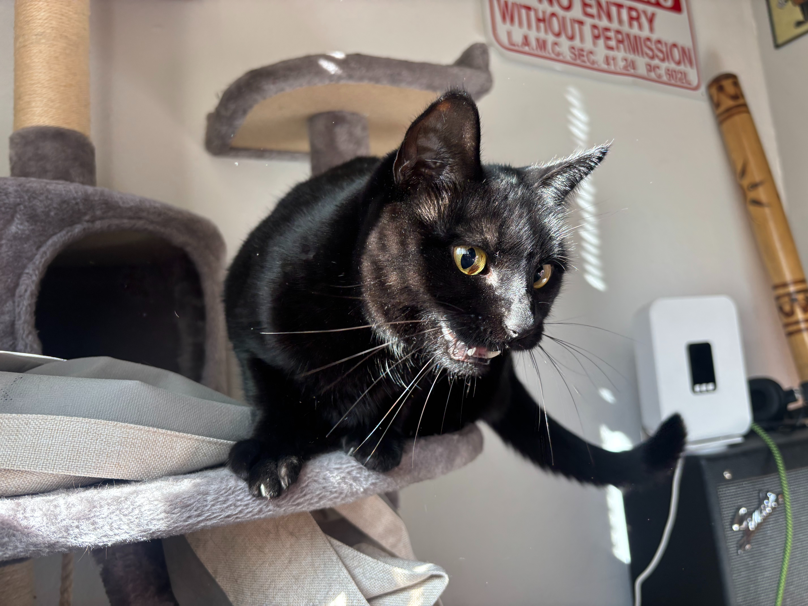

You were my first pet. At 30 years old. I grew up having family dogs, but it wasn’t the same. Even when I was married and my wife’s dogs became my step-dogs, they weren’t really mine. But you were. And not only my first pet, but the first cat I had ever lived with. It was all very new and somewhat scary. What if I messed up?
I’ll admit this now, but at first I resisted getting you. I had been very hurt when the family dogs died growing up; I also had one of the step-dogs die in my arms. I didn’t want to ever have to go through that again. The fear of loss was simply too much. So when a coworker let me know he had a couple cats up for adoption, I said no. I also had never had a cat before, and I wasn’t completely sold on the idea. The dogs I had were very warm and loving, and everything I had ever heard about cats was that they were pretty cold and standoffish, which didn’t seem that appealing to me. However, my girlfriend at the time had a cat that definitely broke some of those stereotypes. And after all, I did like the idea of a more independent pet. Kinda like a furry roommate or something. Said girlfriend also wanted me to get a cat. She thought it would be good for me. She convinced me; and she was right. I haven’t spoken to her in two years, but if I could tell her today how thankful I am she convinced me to get you, I would.
When I first got you, you were so small. You were three years old and looked like a tiny piece of coal. And I’ll never forget when I looked into your face and saw your right eye had the cutest smudge — a freckle. I had never seen that before, and I thought it was so cool. You were so skittish at first. Exploring your new home, sniffing things, climbing on things, hiding in the strangest places. I remember one time I couldn’t find you until I turned on the light in my closet and looked up — you had somehow got on the shelf that was about 7 feet high. And when you saw me, you made the funniest face and let out a startled meow. And your tail was crooked like a cartoon. I’ll never forget that. It was so funny and was just the beginning of showing what a “silly billy” you were.
Eventually you warmed up to me and started to trust your surroundings more. Feeding you treats and scratching you behind your ears made you start to trust me. I will never forget the joy I felt in my heart when you came over and laid your tiny head on me for the first time. Because by then, I was already obsessed with you. I was so worried you wouldn’t ever love me for whatever reason, but sure enough, there you were, laying your head on my leg and purring as I pet you. Soon after you started sleeping in the crook of my legs when I slept. You were my baby. After my girlfriend broke up with me, you laid with me when I cried. You were my best friend.
Things got bad for me and we had to move. I felt terrible. We hadn’t quite been there a year and I could tell how much you loved it. By then you had your favorite spots, and I can still hear you chittering at birds and standing up on your hind legs to watch them with your fuzzy potbelly sticking out. I died laughing. You just had to watch those birds. And that’s where we first started playing fetch with the springs, or catch, really. Which is more impressive if you ask me. I’ll never forget the first time I saw one of your springs fly under the bathroom door. What the hell? Then I saw your arm stick through the bottom and search around for it — if you weren’t so fuzzy, that would have been a scene out of a horror movie. I rolled the spring back towards you, and you snatched it with your claws and pulled it back. And then you rolled it back to me. I was honestly so impressed. What a smart cat.
We moved in with my dad and you were, understandably, skittish of your new home. Not to mention a brand new person; but sure enough, watching you and my dad become buddies was so special. An old man and a cat. A perfect match. You two would fall asleep watching NCIS together, either in his lap or on the arm rest of his chair. He loved taking care of you like you were his own, and you responded with so much love. You were truly his grandkid. Or as he liked to say, grand-kitty.
Eventually I got my own place and we moved again. Unlike the last two places, this one was on the first floor, so you didn’t have the same view of the birds. I never felt good about that. I could tell you missed my dad too, but I’m glad you got to stay with him when I went away for too long. I could tell how much you loved him and missed him, because sometimes you would look for him here. But you knew I was there, and before long would settle down, and be just fine. We had so many fun times in this new apartment too! And you learned how to open cupboards, which was very smart. You were such a crafty kitty. Like the velociraptors in Jurassic Park. But you were deadlier, surely. If you wanted to be. But you chose to be an angel, naturally. My little baby.
You still are my little baby. You always will be. I can’t believe we had less than 3 years together. It felt like so much longer, and I wish it had been. You were only 6 years old and you deserved to live forever. I don’t understand why this happened, but I also know that’s an impossible way of looking at these things. I also know I will never know what killed you, and I have made peace with that. Watching you get sick was surreal. I also can’t help but think I saw some of the signs earlier but just didn’t understand what was going on, but I know you were just trying to hide your pain and be a good kitty. You were so strong until you couldn’t be anymore and I am so happy you can be at peace and without pain now.
The past three days have been some of the worst of my life. By Wednesday I knew you had to go to a vet, and on Friday we went. I really thought they would be able to help you, but I know your illness was too far along now. When we got home it didn’t take long for you to begin declining, even with treatment. You wouldn’t respond and I slowly began to fear the worst. My worst nightmare, the entire reason I had put off ever getting a pet, was coming to fruition. My perfect angel dying young.
Friday night was difficult. You seemed less interested in drinking water and still hadn’t eaten, even after giving you medication. I would talk and sit with you and pet you and you would weakly wag your tail in acknowledgement. I always loved that my cat wagged her tail. There was one glimpse of hope — you did drink a ton of water before I went to bed. I knew that was a side effect of the steroid you were given, and I told myself you would start responding to treatment on Saturday, and everything would start to get better; when I woke up, I saw you hadn’t moved. And for the first time in our lives together, you had an accident. I felt so bad feeling your wet fur. I cleaned it as best I could and put a towel down; not just for any accidents, but also for your comfort.
Saturday would not get better. As the day went and you only got weaker, I slowly realized and began to try and prepare myself for what was coming. When it finally happened, I was right there next to you, holding you and talking to you. I could see in your eyes you knew what was coming too. And then it happened. But even then, you kept fighting. You hung on and fought so hard, and quite frankly, scared me. After you had taken what seemed to be your last breath, you took one more! And then you kept going! You were still alive! Of course, I thought. Just like your father, leave ’em guessing ’til the end.
But eventually, they got shallower and more strained, and you took one last gasp and with a slight groan, lowered your head for the last time, and you looked at me. Your face finally didn’t show any pain. Your eyes looked so peaceful. I cradled you in my arms and held you. The way you were laying, it looked like you were still alive. Then I would move my arm from underneath your legs and they would go limp, and I would look at your face and realize your eyes weren’t actually looking at mine. Even still, I swear I could still hear you breathing. It’s a bizarre phenomenon. An hour later, I could hear you breathing when I clipped some of your fur to keep, and even now I can hear your little cries. I will admit I have checked in the fridge once because I had to be sure. The mind can be cruel to the heart when it grieves.
As soon as your spirit left your body, the air in our apartment changed. I am very alone without you. You were everything to me, and I am admittedly at a loss. I don’t know what to do. Even now as I write this as I’m processing your death, I am trying to be quiet so I can’t wake you. Only I can’t wake you, ever again. And remembering that hurts. I see your springs, your toys; I see your sunflower pedestal that you looked so regal lying on, and I feel like you’ll be on it tomorrow when I wake up, the same way you were just the other day. This loss hurts, but I don’t regret any of this. I’m so glad I got to spend this time with you. You, a fuzzy 10 pound cat, taught me more than most people ever have. You helped me so much. Thank you for teaching me how to love and care unconditionally. Being woken up by a slight bite at 4 AM when you don’t get up for work until 6 AM will do that. I will miss being woken up to feed you. I’ll miss so much your ceaseless meows at shadows, your laps through the studio, your destructive nature when it came to any and all yarn or feathers. When it felt like I had nothing or no one, I had you, and you always showed me love. You were the perfect cat.
One of the things I always liked to say to you is “I’ve never seen one like you before,” and it’s true. And I never will see one like you again.
Goodbye Tapioca. I will always love you.
